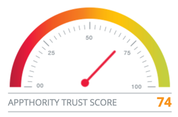

Appthority uses analysis algorithms to assign each app a score ranging from 0-100 that reflects the potential risk. Appthority checks for hundreds of attributes, including:
Points are removed for each risky behavior found. If malware is found, the app is automatically assigned a score of 0.
To modify how scores are calculated in Appthority, see Customize Scores.
